Архип Иванович Куинджи (1841 - 1910)
Великий русский художник и Человек
Архип Куинджи родился в предместье Карасевка под Мариуполем в семье сапожника. Сведения о детстве Архипа Куинджи очень отрывочные и неполные. Даже дата его рождения известна недостоверно. Сохранились немногочисленные документы, на основании которых биографы Куинджи называют днём его рождения 15 января 1841 года. Его отец и дед носили фамилию Еменджи (с турецкого языка - «трудовой человек»). Род их был греческого происхождения. Фамилию Архип получил благодаря профессии деда. Куинджи по-татарски значит «золотых дел мастер». В шесть лет Архип Куинджи остался сиротой и жил в семье тетки или у старшего брата Спиридона, который был очень беден и не мог дать мальчику достойного образования. Он рано начал зарабатывать себе на жизнь: был пастушонком, был слугой у хлеботорговца, служил у подрядчика, работал ретушером у фотографа. Куинджи рано проявил склонность к рисованию, в детстве рисовал, где только мог и на чем только мог. Главной мечтой Куинджи было поступление в Академию художеств в Санкт-Петербурге,куда Архип Куинджи оправился поступать в 1865. Первые два года Куинджи не выдерживал экзамен. Наконец в 1868 году он создал не дошедшую до наших дней картину «Татарская сакля в Крыму» и был зачислен в Академию вольным слушателем. В это время он познакомился с художниками-передвижниками, в числе которых были И.Н.Крамской и И.Е.Репин и примкнул к ним. Поначалу художник прилежно учился, но когда к нему пришла слава, то забросил обучение. Хотя усердия ему было не занимать. Однажды, Архип Куинджи пришел в гости к художнику Ивану Крамскому и застал его сыновей за занятиями математикой с репетиром, который объяснял им сложное алгебраическое уравнение. Куинджи захотел послушать, но Крамской с усмешкой попросил его оставить занятие, в котором тот ничего не смыслил. Архип Куинджи вспылил: «Позвольте! Я — человек, и потому все могу понять!» На следующее утро сияющий художник принес решение задачи. Источник...
В 1873 году Куинджи создал два замечательных пейзажа «На острове Валааме» и «Ладожское озеро». Постепенно к Куинджи приходила известность. На Международной выставке в Лондоне художник получил бронзовую медаль за картину «Снег». Куинджи добивался ощущения света в своих произведениях за счет резкого контраста цветов и точного подбора тона. Для русского искусства это стало новаторством - ранее подобное средство не применялось. В 1880 г. Куинджи устраивает выставку одной своей картины «Ночь на Днепре». Художник очень тщательно подошёл к организации выставки: задрапировал в зале окна и осветил картину лучом электрического света. Куинджи показывал ее публике всего по два часа в день. Картина имела небывалый успех у публики: она поражало новыми цветосочетаниями, для достижения которых художник проводил эксперименты с красочными пигментами. Картина светится изнутри. Кажется, что художник использовал какие-то специальные краски или за картиной спрятан фонарик. Илья Репин называл Куинджи «художником света». Многие художники пытались повторить палитру Куинджи, достичь той достоверности, с которой он рисовал тени и свет. Некоторые даже говорили, что в создании необычных красок ему помогает великий химик Менделеев, находившийся с Куинджи в приятельских отношениях. Между тем, секрет «куинджевских красок» был проще, чем казался. С помощью прибора, позволяющего оценить чувствительность глаза к цветовым оттенкам, было установлено, что у Куинджи чувствительность глаза достигает идеальных точностей. Он просто видел иначе. Не в плане творческой позиции, а в самом буквальном физиологическом смысле.
В 1874 году жизнь Архипа Куинджи получает новое наполнение: художник женится на Вере Леонтьевне Кетчерджи-Шаповаловой. Он был влюблён в неё ещё с юношеских лет. Ранее этот брак был невозможен из-за крайней бедности Куинджи и богатого происхождения невесты. Продажа картин сделала художника обеспеченным человеком. В творчестве Куинджи чувствуется влияние Айвазовского. С именем этого метра живописи связан интересный период в жизни Куинджи. В 15 лет Архип Куинджи отправился учиться к Айвазовскому. Айвазовский не сумел рассмотреть талант Куинджи и не стал заниматься с ним, посмеявшись над его деревенской мазней. В течение двух месяцев Архип жил под навесом во дворе, в мастерскую его не пускали. В конце «обучения» мэтр доверил Куинджи покрасить свой забор. Морская тематика была одной из самых любимых в творчестве Куинджи: море было рядом с Куинджи, когда он маленьким жил в Крыму, море плескалось на картинах Айвазовского,кумира Куинджи. На картинах Куинджи море всегда разное: то тает в серой дымке, то ослепляет лазурью. В 1882 году Куинджи перестал выставляться. Он посвятил себя другим занятиям — разрабатывал принципы летательных аппаратов, исследовал свойства и формулы красок, свел близкую дружбу с известным ученым Дмитрием Ивановичем Менделеевым и стал частым гостем на традиционных менделеевских «средах».
После шумного успеха друзья Куинджи обоснованно ожидали новых картин и сюжетов. Но у художника своя логика — он «замолчал» на 20 лет. В это время он продолжал писать, изучать литературу, занимался с учениками, строил дачу в Крыму. До сих пор до конца не известны причины, по которым художник, будучи на пике славы, решился на подобное затворничество, но, по всей видимости, он просто устал от шумихи, сопровождавшей каждую его выставку.Архип Куинджи заслужил признание при жизни, сделался довольно состоятельным человеком. В 1894 г. он стал профессором пейзажной мастерской в Академии художеств.Через три года Куинджи отстранили от занимаемой должности, т.к. он общался с участниками студенческих волнений. Художник продолжал заниматься с учениками частным образом, устроил им на свои средства поездку в Западную Европу. В 1897 году Куинджи покинул стены Академии, так как поддержал своих учеников в их противостоянии с ректором. Однако его уход вовсе не означал окончательного разрыва ни с Академией, ни с последователями. Его учениками были выдающиеся пейзажисты Николай Рерих, Аркадий Рылов, Константин Богаевский, Аркадий Чумаков, будущий основатель Латвийской академии художеств Вильгельм Пурвитис.В 1901 году Куинджи прервал своё «молчание», представив взыскательной публике новые шедевры: «Вечер в Украине», теологический сюжет «Христос в Гефсиманском саду» и новый вариант «Берёзовой рощи». Они до сих пор волнуют и завораживают зрителя, надолго приковывая взгляд.


 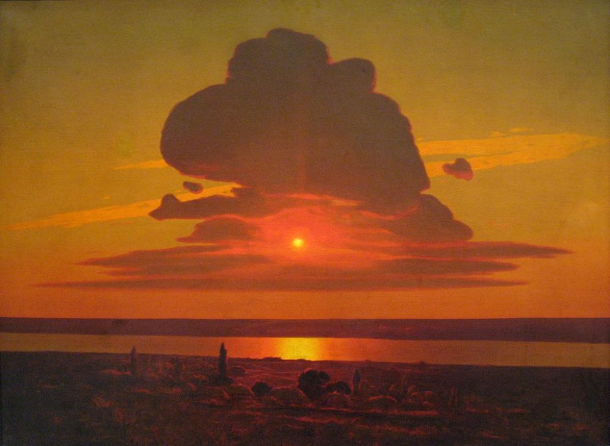
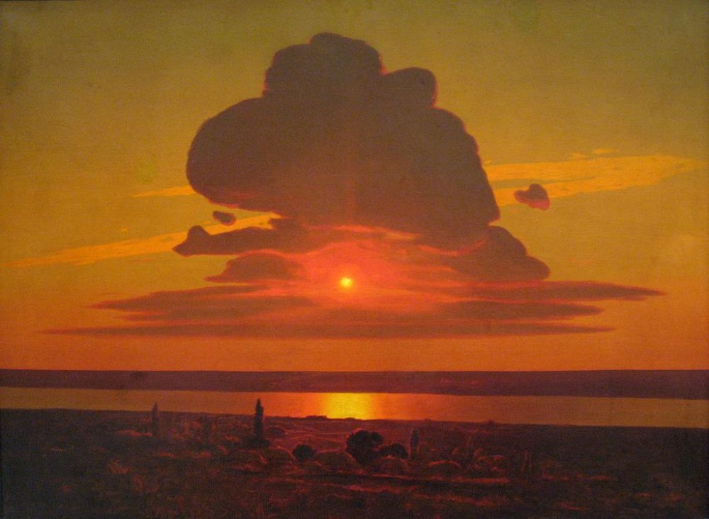
Волшебник света
Гениальный русский художник Архип Куинджи прожил не очень долгую, но яркую жизнь, оставив в память о себе
множество потрясающих полотен. Он придумал новую технику пейзажной живописи — в ней художник объединил свои знания в области физики и химии с элементами романтизма и импрессионизма.
Однако жизнь этого замечательного человека заслуживает того, чтобы о ней писали
книги и снимали фильмы. Многие современники называли Архипа Куинджи человеком-легендой и героем своего
времени. Он умел помогать не словами, а делами.
Сохранились воспоминания, согласно которым уже в пятилетнем возрасте малыш стал защитником слабых. Маленький
Архип телосложения был богатырского, а потому мог навести страх не только на своих сверстников, но и на
мальчишек постарше, если замечал вдруг, что кто-то издевается над живыми существами, будь то люди или
животные. Стоило истязателям завидеть шагающего навстречу крепкого мальчика, как они тут же отпускали свою
жертву, а сами пускались наутёк, дабы не получить тяжёлую оплеуху.
Став известным художником, Архип Куинджи никогда не отказывал в помощи тем, кто за ней обращался.
Архип Иванович не скрывал своей слабости к пернатым созданиям, отдыхая рядом с ними душой. Стоило ему завидеть
больную особь, как он тут же брался за её лечение. Заболевшую птичку художник забирал домой и без устали
занимался её лечением и кормлением. Известен случай, когда он собственноручно сделал трахеотомию, вставив в
больное горлышко птицы небольшую трубочку. После этой операции голубь прожил ещё достаточно долгое время. Ещё
одной гордостью художника была спасённая жизнь бабочки. Заметив надорванное крылышко у залетевшей к нему в
окно бабочки, Куинджи заклеил рану насекомого жидким клеем, изготовленным из внутренностей рыбы.
По признанию художника, его пернатые подопечные оказывались часто куда более благодарны ему за помощь, чем
люди. Он рассказывал о том, как птицы помнят его доброту и стараются по-своему отблагодарить его. А вот люди
временами забывали даже просто высказать слова благодарности.
Источник...
Архип Куинджи - натура гениальная и самобытная, человек-легенда, жизнь которого заслуживает безмерного уважения, написания романов и хроник, создания фильмов... и не только документальных. Он - воистину герой своего времени и кузнец своей судьбы. Безнадежно нищий и баснословно богатый - он всего себя посвятил искусству, одной единственной женщине, благотворительности и любви ко всему живому.
Источник...
 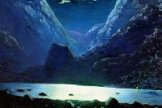
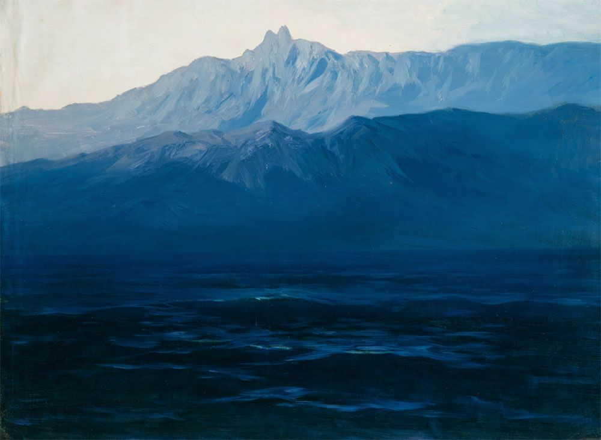
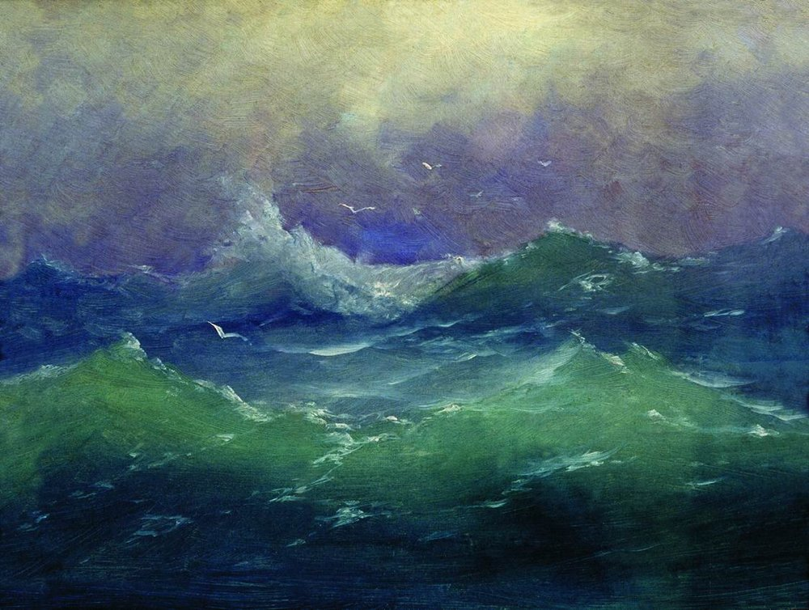
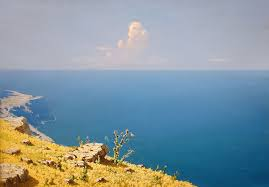
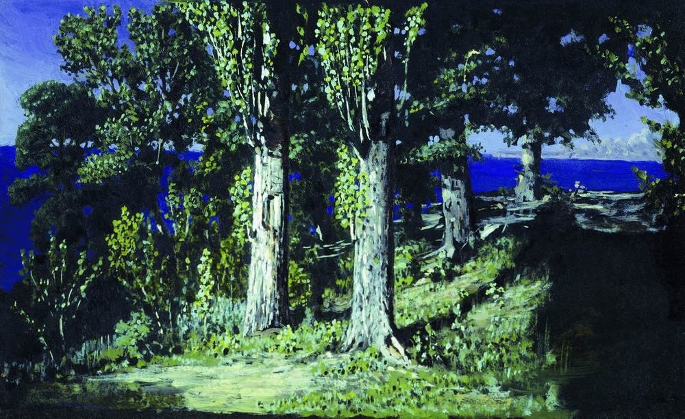
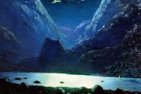
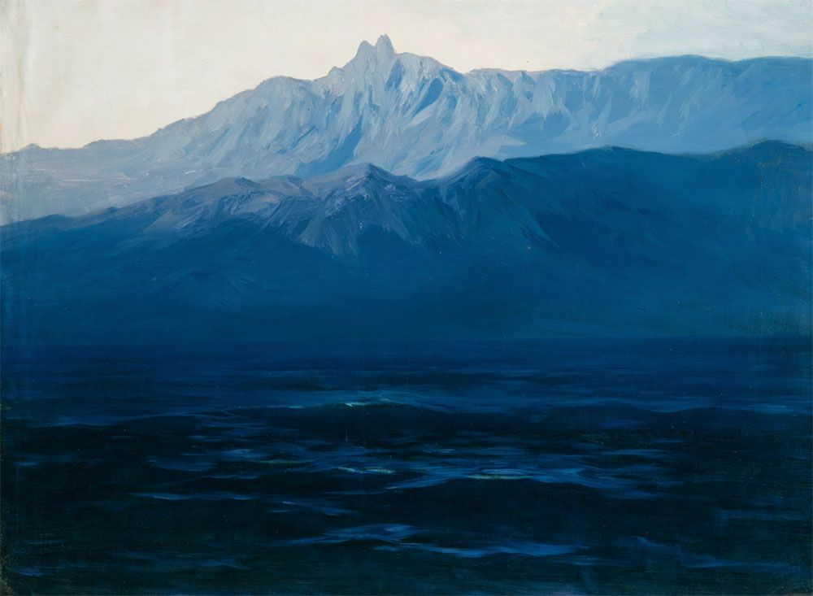
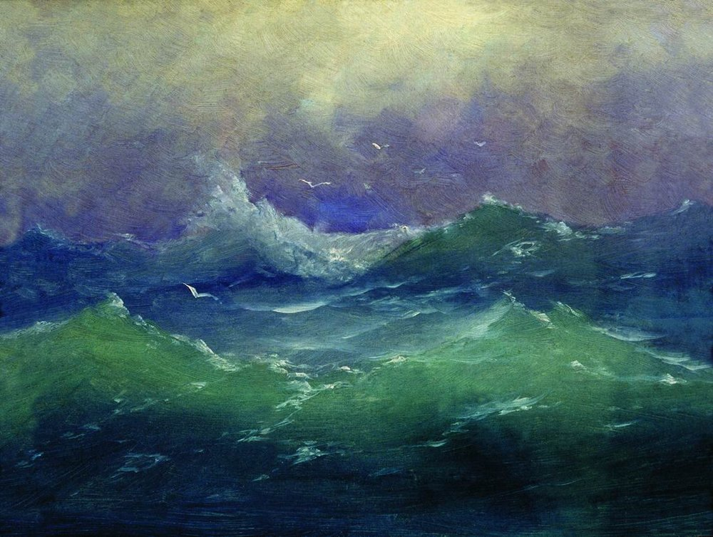
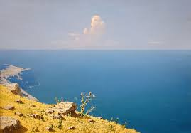
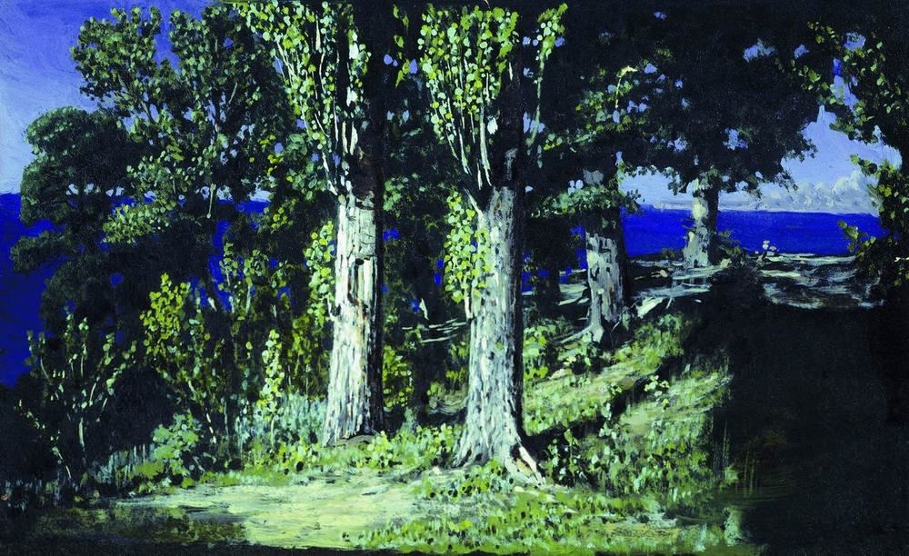
| Картина | Описание | Характеристики | Галерея | ||
|---|---|---|---|---|---|
| Название | Год создания | Техника | Размер, см | ||

|
Пейзаж | 1874 | Картон, масло | 22,3 × 33,5 | Луганский областной художественный музей |
| 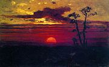 | Закат | Между 1876 и 1890 | Картон, масло | 22 × 35,2 | Государственный Русский музей |
| 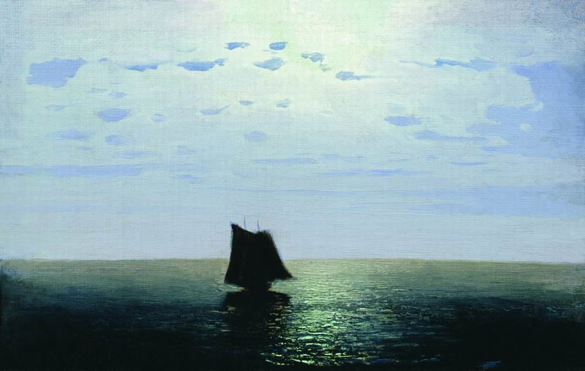 | Лунная ночь на море | Между 1876 и 1890 | Картон, масло | 19 × 29,5 | Пермская государственная художественная галерея |
| 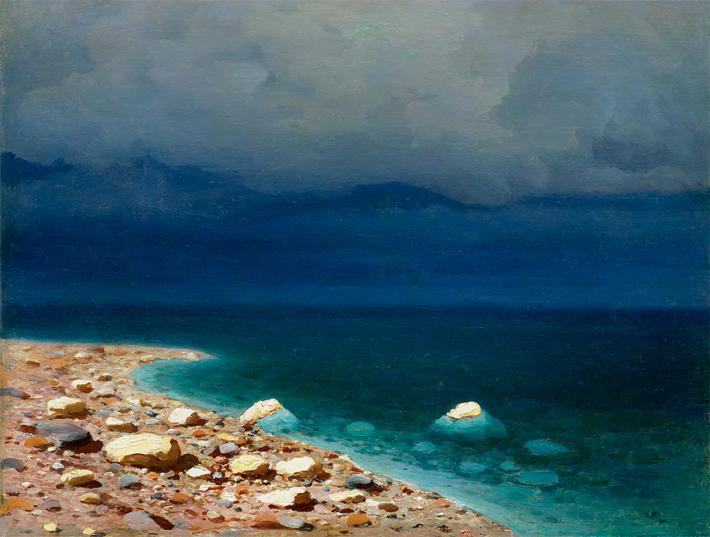 | Море | Между 1898 и 1908 | Бумага на холсте, масло | 42 × 53 | Самарский областной художественный музей |
| 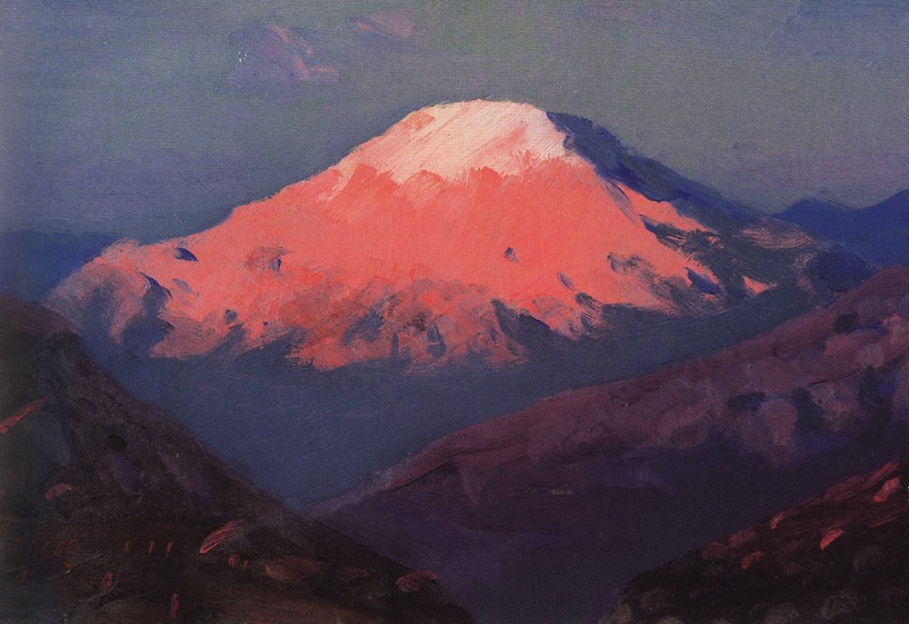 | Казбек | Между 1890 и 1900-ми | Бумага на картоне, масло | 11,5 × 17,5 | Пензенская областная картинная галерея имени К. А. Савицкого |
| 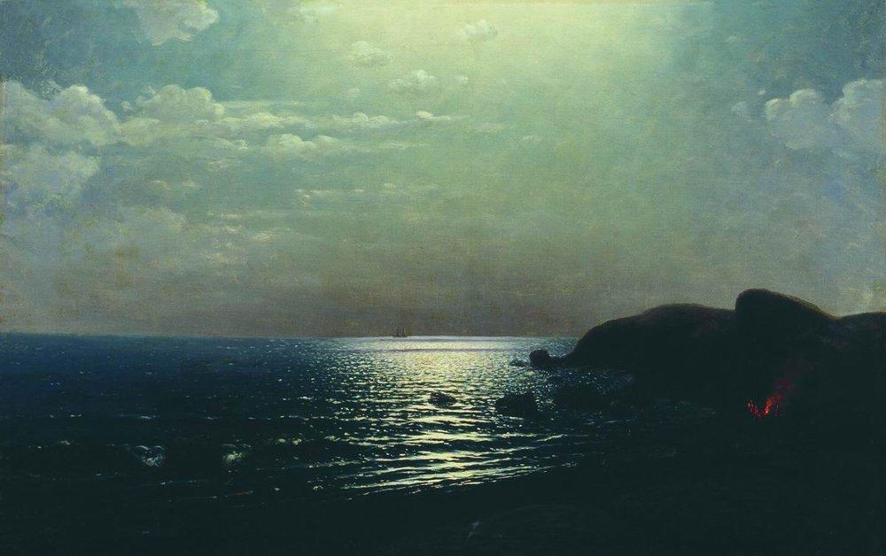 | Лов рыбы на Чёрном море | 1900 | Холст, масло | 67 × 102,5 | Дальневосточный художественный музей |
| Закат | Между 1876 и 1890 | Картон, масло | 22 × 35,2 | Государственный Русский музей | |

|
Березовая роща | 1901 | Холст, масло | 165,5 × 116 | Национальный художественный музей Республики Беларусь |
| 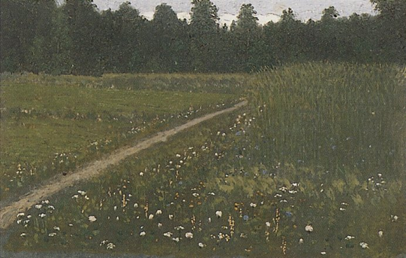 | Лесная поляна | 1887 | Цинк, масло | 10,8 × 17 | Государственная Третьяковская галерея |
| 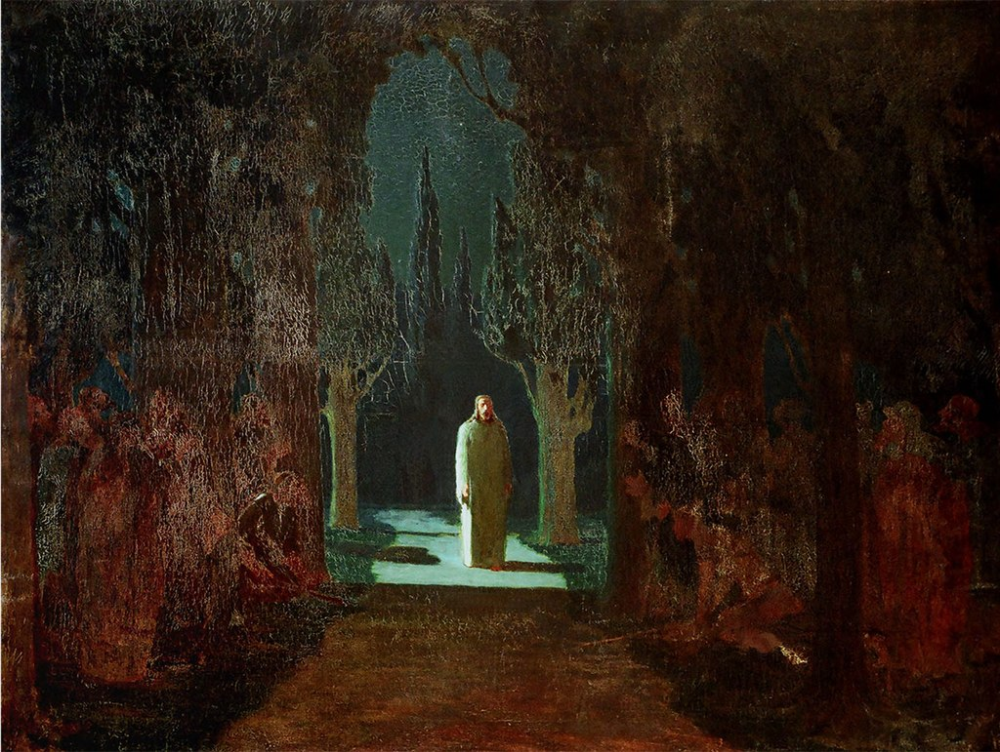 | Христос в Гефсиманском саду | 1901 | Холст, масло | 106,5 × 142,5 | Воронцовский дворец (Алупка) | Лов рыбы на Чёрном море | 1900 | Холст, масло | 67 × 102,5 | Дальневосточный художественный музей |